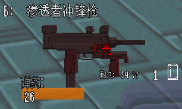

枪械操作
继前作The Citadel之后，Beyond Citadel在枪械机制方面更进一步，让游戏在枪械操作方面的体验更具沉浸感。
在游戏的开头，殉教者从冷冻舱中被唤醒后，教程关卡中首先介绍的机制之一，就是游戏的枪械操作。
在游戏中，枪械操作有三种风格可选：
此处按照枪械机制的应用完整度顺序，逐个进行介绍：
完整换弹，全程手动操作
需手动卸下、装填弹匣；空仓状态须拉枪机上膛；
快速换弹会丢弃弹匣；
老化的武器会出现抛壳故障。
简易换弹，手动上膛
一键更换弹匣，但空仓状态须拉枪机上膛；
老化的武器会出现抛壳故障。
传统简易换弹
传统换弹方式，一键完成换弹。
枪械故障机制被禁用。
击发故障

枪械的耐久度会随着使用而逐渐下降。
在枪械故障机制未被禁用的条件下，枪械的耐久度越低，抛壳故障的发生概率就越高。
发生抛壳故障（俗称卡壳）时，弹壳会卡在枪械的抛壳窗，导致无法正常供弹继续射击。
需要拉动枪机进行排障，排出弹壳手动上膛后，才可继续射击。
* 您随时可以在 设置 -> 游戏体验偏好 中更改枪械操作体验。